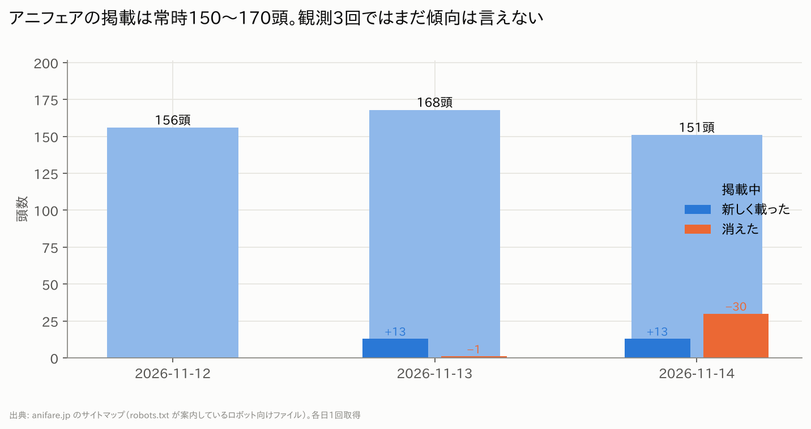
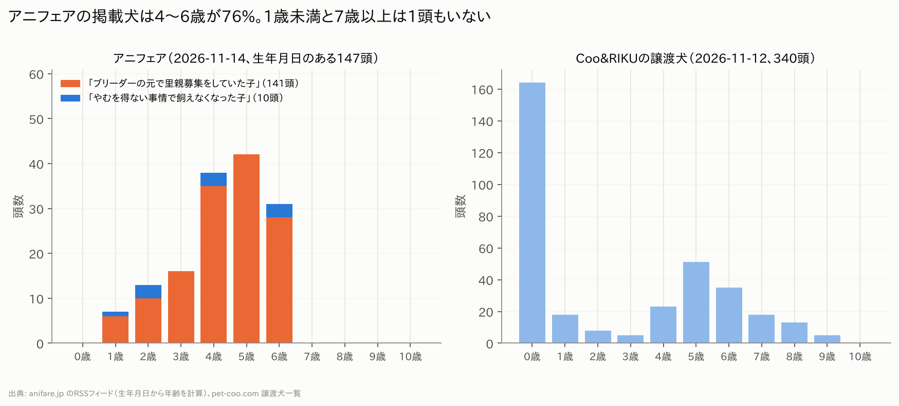
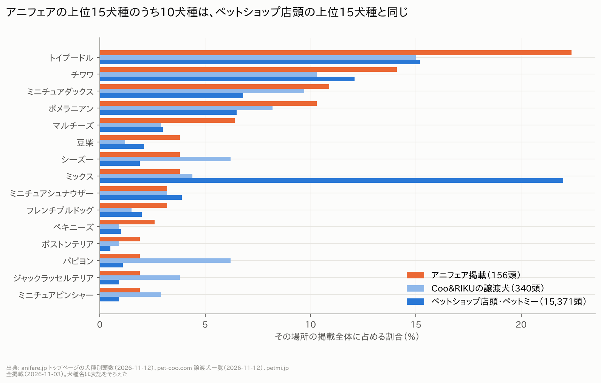
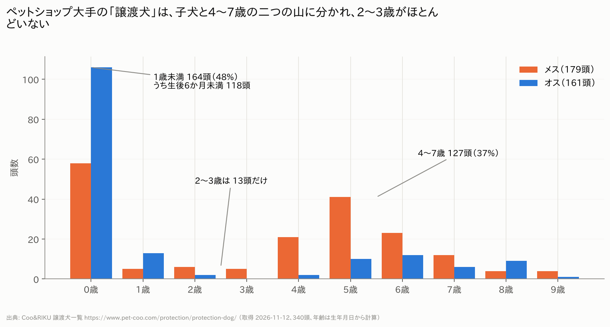

作成日：2026-11-14 ／ データ取得日：2026-11-12〜14 ／ 置き場所：pet-data/anifare/
第2版：海斗さんの承認（11/14）を受けて、サイトが配信しているRSSフィードから全151頭の生年月日・体重・避妊去勢・出どころの文を取得し、1b章を追加しました。週ごとの観測がたまるにつれて、滞留日数などの数字が増えていきます。
| 項目 | 理由 | 次の手 |
|---|---|---|
| アニフェアの性別、持病・産歴の記載、拠点別の内訳 | RSSフィードに性別・拠点の項目がない。説明文は定型2種類だけで、持病・産歴の記載は0件 | 個別ページは規約により読まない。許可が出れば取れる |
| 滞留日数の分布 | 観測がまだ3日分。指示書どおり4週たまってから | 自動で蓄積中 |
| ペットのおうち | アクセス自体がブロックされた（Cloudflare）。回避していない | 取らない |
| OMUSUBI | 利用規約が「データベース作成目的のダウンロード・ロボットの利用」を禁止 | 取らない |
| いつでも里親募集中 | 規約が「複製・転載」を禁止。統計目的が当たるか不明 | 判断待ち |
| 費用ページの過去の変遷（Wayback） | この環境から web.archive.org に接続できない。存在するスナップショットの日付だけ分かった | 海斗さんのブラウザで開けば読める（URL一覧あり） |
| 決算公告 | 5法人とも見つからなかった（gBizINFO、官報決算DB、公式サイト、東京都NPOポータルを確認） | 登記簿の取得、NPO法人の事業報告書（初年度は2026年12月期） |
| 代表者「原田康隆」の確認 | 公的な無料資料に代表者名が出ていない | 登記情報提供サービス（有料） |
| Googleマップの口コミ | 口コミ本文の読み込み経路が robots.txt の禁止パス。公式APIを使う方針に決定 | APIキー待ち（1拠点5件まで） |

| 取得日 | 掲載中 | 新しく載った | 消えた |
|---|---|---|---|
| 2026-11-12（木）20時 | 156頭 | — | — |
| 2026-11-13（金）14時 | 168頭 | 13頭 | 1頭 |
| 2026-11-14（土）22時 | 151頭 | 13頭 | 30頭 |
出典：anifare.jp のサイトマップ（各日1回取得）。データ：clean/アニフェア_掲載数の推移.csv、panel.csv

出どころ | 説明文（全頭、この2種類のどちらか） | 頭数 | 割合 | |---|---|---| | 「ブリーダーの元で里親募集をしていた子を保護しています。」 | 141頭 | 93.4% | | 「やむを得ない事情で飼えなくなった子を保護しています。」 | 10頭 | 6.6% |
年齢（生年月日のある147頭） | 年齢 | 頭数 | 割合 | |---|---|---| | 1歳未満 | 0頭 | 0% | | 1歳 | 7頭 | 5% | | 2〜3歳 | 29頭 | 20% | | 4〜6歳 | 111頭 | 76% | | 7歳以上 | 0頭 | 0% |
避妊・去勢 - 「未」141頭（93%）、「済」10頭。ブリーダー由来141頭のうち未手術は137頭です。 - 手術をしないまま掲載され、譲渡のときに手術するのか、里親側に任せるのかは、サイトからは分かりません。
体重：中央値4.4kg（1.4〜11.8kg、150頭）。小型犬が中心です。
データ：snapshots/2026-11-14.csv、clean/アニフェア_出どころ.csv、clean/アニフェア_年齢1歳刻み.csv、clean/アニフェア_出どころと避妊去勢.csv

データ：clean/犬種ランキング比較.csv

出典：https://www.pet-coo.com/protection/protection-dog/ （取得 2026-11-12、340頭。サイトの表示は「今までに15,964頭の家族が決まりました」）
| 項目 | 数字 |
|---|---|
| 性別 | メス179頭（53%）、オス161頭（47%） |
| 1歳未満 | 164頭（48%）。うち生後6か月未満が118頭 |
| 2〜3歳 | 13頭（4%） |
| 4〜7歳 | 127頭（37%） |
| 4歳以上のメスの割合 | 72%（145頭中） |
| 1歳未満のメスの割合 | 35%（オスが65%） |
| 年齢の中央値 | 1.1歳 |
データ：compare/coo_protection_2026-11-12.csv、clean/CooRIKU譲渡_年齢1歳刻み.csv
| 場所 | 呼び名・原文 | 金額 | 出典（取得 2026-11-12） |
|---|---|---|---|
| 各犬のページ | 「寄付金をお願いしています。※寄付金は任意であり保護犬の対価ではございません」 | 記載なし | https://anifare.jp/dogcat/702709/ |
| 費用ページ | ページ名「お迎え時の費用について」。項目は「活動支援金」「リコンディショニングパック」「お迎えセット」 | 記載なし（「詳細はお問い合わせください」） | https://anifare.jp/fee/ |
| 同上 | 「保護犬に対する対価ではなく保護活動を維持・発展するためにご理解ご協力お願いします」「お迎えセットは必須ではございません」 | — | 同上 |
| 相談窓口 | 「寄付金が任意でなく、絶対条件と言われた」「毎月のフード購入が必須と言われた」場合は連絡を、という案内 | — | https://anifare.jp/support/ |
| 寄付ページ | 「寄付・ご支援」（譲渡時の費用とは別） | 2,000〜20,000円 | https://anifare.jp/donation/ |
clean/Wayback_スナップショット一覧.csv）。/fee/ は2025年6月より前のスナップショットがなく、このURLは2025年ごろに新設された可能性があります（推測）。| 法人番号 | 名称 | 登記上の所在地 | 法人番号の指定日 | 変更履歴・補足 |
|---|---|---|---|---|
| 2011001127754 | 株式会社MILLE | 渋谷区広尾5-25-2 | 2019-04-26 | 2020-02-07「株式会社anifare」に商号変更 → 2023-12-28「株式会社MILLE」に戻す。社保の被保険者54人 |
| 8011005008904 | 一般社団法人アニマルウェルフェア東京 | 渋谷区広尾5-25-2（MILLEと同じ。社保の事業所も同じ広尾AKビル8階） | 2021-02-10 | サイト上の所在地は八王子。被保険者7人 |
| 4120905006621 | 一般社団法人アニマルウェルフェア大阪 | 豊中市庄内栄町5-11-5 | 2024-06-21 | 被保険者2人 |
| 9290005019619 | 一般社団法人アニマルウェルフェア福岡 | 糟屋郡須惠町須恵973-1 | 2025-01-20 | 被保険者4人 |
| 9010105002353 | NPO法人anifare | 八王子市南浅川町4030 2階（東京シェルターと同じ） | 2025-11-26 | 都の認証 2025-11-04。理事長 坂口孝、副理事長 原健治 |
時期の重なり | 日付 | 出来事 | |---|---| | 2019-04 | 株式会社MILLE 設立 | | 2020-02 | 株式会社anifare に商号変更 | | 2021-02 | 一般社団法人アニマルウェルフェア東京 設立（株式会社と同じ住所） | | 2021-05 | 「保護犬譲渡事業を移管、非営利活動に転換」（公式の沿革） | | 2021-08〜2022-03 | 大阪・福岡のシェルター開設（現地の社団ができる2〜3年前） | | 2023-12 | 株式会社anifare → 株式会社MILLE に戻す | | 2024-06／2025-01 | 大阪・福岡の一般社団法人 設立 | | 2025-11 | NPO法人anifare 設立 |
お金の流れに関わる点 - 譲渡事業は一般社団法人に移っていますが、月額会員サービス「ani SUPPORT」の提供者は株式会社MILLEです（約款PDFの記載）。 - ani SUPPORT は月額2,900円（年38,280円税込）、1年自動更新、途中解約不可。旧約款（2020年12月）は月1,900円（年22,800円）で、約1.5倍になっています。 - 約款は「譲受契約に付随するサービス」としていますが、加入が必須とは書いていません。 - オンラインストアの個人情報保護方針には、今も旧商号の「株式会社anifare」が残っています。特定商取引法の表記に販売業者名がありません。 - 寄付の受領法人名はサイトに記載がありません。「所得控除対象団体ではございません」と明記されています。 - 従業員数：サイト上は「90名」。社保の被保険者は株式会社54人＋社団3法人13人＝67人で、8割が株式会社側です。
サイト内の食い違い - 大阪の代表理事：/corporation/ では原健治、/about/ では松本華奈。 - 東京の開設時期：2020年10月30日と2021年4月の両方の記載。福岡のページにも東京と同じ「2020年10月30日にオープン」の文言。 - 勉強会の回数：/numbers/ は61回、/history/ は「2026年8月現在55回」。
動物取扱業の表記（clean/動物取扱業の表記_拠点別.csv）
- 番号があるのは7拠点中3拠点（八王子「5動相多 第422号」、お台場「5動相取第350号」、立川「8動相多 第271号」）。
- 大阪・大日・福岡・ももちは番号の記載がなく、大日は欄自体がありません。
- 種別は全拠点「譲渡し(二種)」で、第一種（営利）の表記はありません。登録年月日・有効期限・責任者はどこにも書かれていません。
| # | 項目 | 状況 |
|---|---|---|
| 1 | 出どころの割合（公式60〜70%と比較） | ✅ 掲載中151頭のうちブリーダー由来93.4%（1b章）。「60〜70%」は今回読んだ公式ページに数値がなく、掲載中と年間の違いもあるので、単純比較はできません |
| 2 | 性別比・年齢分布 | △ 年齢は完了（4〜6歳が76%、7歳以上0頭）。性別はRSSに項目がなく未取得 |
| 3 | 犬種ランキング上位15と店頭との一致度 | ✅ 15犬種中10犬種が一致、順位相関0.72（2章） |
| 4 | 滞留日数の分布 | ⏳ 4週たまってから。観測は開始済み |
| 5 | 月あたりの新規掲載数 | ⏳ 2日分で月換算390頭。週次がたまってから確定 |
| 6 | 比較サイトとの差 | △ Coo&RIKU譲渡のみ（年齢・犬種は比較済み）。他3サイトは規約・ブロックで未取得 |
| 7 | 費用・呼び名の年表 | △ 現在の表記のみ。過去は未取得 |
| 8 | 法人関係の一覧表 | ✅ 5章 |
| 選択肢 | 得られるもの | 手間・リスク |
|---|---|---|
| A. RSSフィードを使う（承認済み・実施中） | 全頭の生年月日・体重・避妊去勢・出どころの文。毎週の「新しく載った子」の出どころ割合もたまる | 「配信物を読むのは規約の禁止に当たらない」は私の解釈。相手は違う読み方をするかもしれない |
| B. アニフェアに取材・許可を申し込む | 許可が出れば全項目。断られても「断られた」が記録になる | 返事待ち。調査していることが相手に伝わる |
| C. サイトマップだけで続ける（現状） | 掲載数、新規・消えた数、滞留日数、97%の検証 | 中身（年齢・出どころ）は分からない |
| D. 登記簿を取る（有料、1通数百円） | 代表者・役員・目的・公告方法。株式会社と社団の役員の重なり | 海斗さんが登記情報提供サービスで取得 |
| E. Waybackを海斗さんのブラウザで開く | 費用と呼び名の年表（24件のURL一覧あり） | 手作業。保存したHTMLを送ってもらえれば、こちらで年表にする |
| F. 東京都・大阪府・福岡県に、第二種動物取扱業の届出書を開示請求 | 届出の年月日、飼養頭数、責任者。定期報告（2020年6月以降義務）があれば年間の譲渡頭数 | 請求書の文面はこちらで作れる。数週間かかる |
| 指示書の項目 | 答えたか |
|---|---|
| タスク1：全件取得（1頭ごとの項目） | △ RSSで代替。番号・犬種・生年月日・体重・避妊去勢・説明文・出どころ分類は全151頭。性別・拠点・タグは取れない。持病・産歴・金額の記載は0件 |
| タスク1：週次の定点観測（新規・消えた・滞留日数・30日以内の割合） | ⏳ 開始済み（サイトマップ方式、3回分）。滞留日数は4週後 |
| タスク2：比較サイト2〜3つ | △ 1つ（Coo&RIKU）。3つは取れない理由を報告。代替案はRSS方式の他団体・開示請求 |
| タスク3：Waybackの年表 | ❌ 接続不可。スナップショット一覧のみ |
| タスク4：法人番号・所在地・設立日・変更履歴 | ✅ |
| タスク4：所在地・時期の重なりの表 | ✅ |
| タスク4：決算公告 | ✅ 探した結果「見つからなかった」 |
| タスク4：動物取扱業申請情報（全拠点、原文） | ✅ |
| タスク4：月額会員・保険・フードの提供元 | ✅ 月額＝株式会社MILLE、フード＝共立製薬の協賛（ロイヤルカナン）、保険＝現行ページに記載なし（過去PDFにSBIプリズム少短のロゴ） |
| タスク5：Googleマップ口コミ | ❌ 禁止パスのため未取得。公式API方式に決定、キー待ち |
| 作法：3秒以上・並列なし | △ 3秒以上は守った。並列は一時的に破った（0章） |
| 作法：ログイン・非公開ページに触らない | ✅ |
| 作法：robots.txt の禁止パスは明記して判断を仰ぐ | ✅ |
| 作法：生HTMLを日付フォルダに保存 | ✅ raw/（サイトマップ、Coo&RIKU一覧）。中止したアニフェア個別ページは保存なし |
| 成果物：レポート（Markdown＋PDF）、グラフ、CSV、zip | ✅ |
| 書き方：できた・できなかったを冒頭に | ✅ |
| 書き方：事実と推測を分ける | ✅ |
| 書き方：悪い数字・仮説に反する数字も書く | ✅（ミックス犬の割合、新規掲載ペース） |
| 書き方：最終判断をしない、選択肢を出す | ✅ 8章 |
| 書き方：全数字に出典と取得日 | ✅ |
| 断定してよい／いけない数字の一覧 | ✅ 7章 |